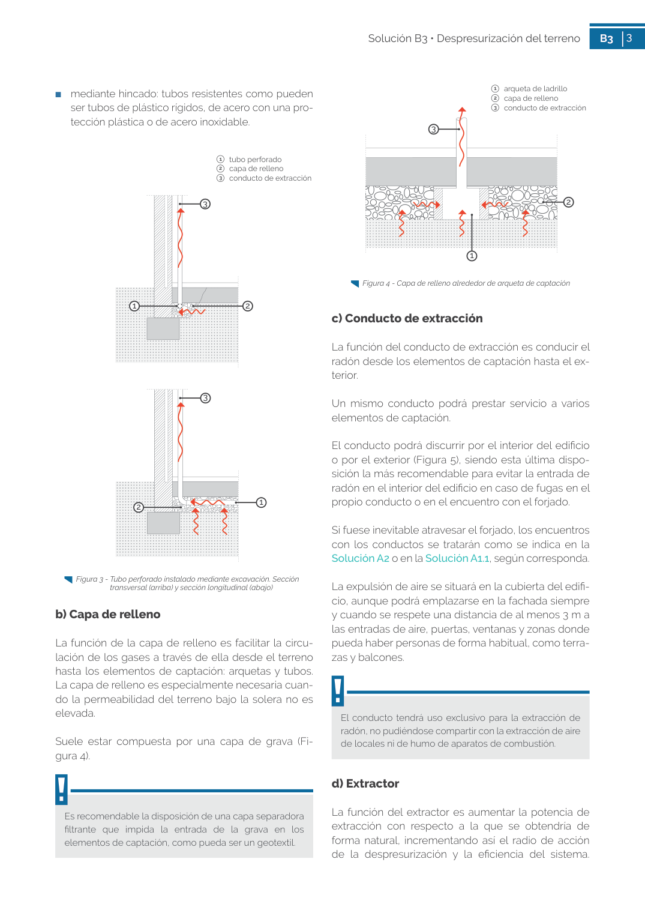

<!doctype html>
<html lang="es"><head><meta charset="utf-8">
<meta name="viewport" content="width=device-width, initial-scale=1">
<title>GUIA · 3   conducto de extracción</title><link rel="stylesheet" href="../estilo.css">
</head><body>
<nav><a href="../index.html">Índice</a> › <a href="../doc/guia-pdf-6eb52848c327-sin-fecha-24c6293dc482.html">GUIA</a> › 3</nav>

<header class="meta">
<p><a href="../doc/guia-pdf-6eb52848c327-sin-fecha-24c6293dc482.html">GUIA</a> · 3   conducto de extracción · versión sin-fecha · capa guia</p>
</header>
<div class="cita"><strong>Cita:</strong> GUIA · 3 · 3   conducto de extracción · páginas físicas pág. 3 (impresas: ['3'])</div>
<p>Formatos: <a href="../../contenido/docs/GUIA-PDF-6eb52848c327/sin-fecha__24c6293dc482/apartado/a0012__3-conducto-de-extraccion.json">JSON compacto</a> · <a href="../../contenido/docs/GUIA-PDF-6eb52848c327/sin-fecha__24c6293dc482/apartado/a0012__3-conducto-de-extraccion.md">Markdown</a> · <a href="../../contenido/docs/GUIA-PDF-6eb52848c327/sin-fecha__24c6293dc482/fuente.pdf">PDF fuente</a></p>
<p><a href="../doc/guia-pdf-6eb52848c327-sin-fecha-24c6293dc482.html">Ámbito del documento</a> · <a href="../doc/guia-pdf-6eb52848c327-sin-fecha-24c6293dc482.html#ambito">texto del ámbito</a> ·
<a href="../doc/guia-pdf-6eb52848c327-sin-fecha-24c6293dc482.html">documento y tablas</a></p>
<nav><a href="guia-pdf-6eb52848c327-sin-fecha-24c6293dc482__a0011.html">← 1   tubo perforado 2   capa de relleno</a> <a href="guia-pdf-6eb52848c327-sin-fecha-24c6293dc482__a0013.html">b) Capa de relleno →</a></nav>
<h1>3 3   conducto de extracción</h1>
<p>Tipo: tablas, figuras · nivel 1 · sección estimada: 3   conducto de extracción · padre: </p>
<pre class="literal">3   conducto de extracción
Figura 3 - Tubo perforado instalado mediante excavación. Sección
transversal (arriba) y sección longitudinal (abajo)
3
1
1
2
3</pre>
<h2>Tablas en estas páginas</h2><ul><li>p. 3 · <a href="../../contenido/docs/GUIA-PDF-6eb52848c327/sin-fecha__24c6293dc482/tabla/p0003_t01.json">p0003_t01.json</a> · <a href="../../contenido/docs/GUIA-PDF-6eb52848c327/sin-fecha__24c6293dc482/tabla/p0003_t01.csv">.csv</a></li></ul><h2>Página visual</h2><figure><a href="../../contenido/docs/GUIA-PDF-6eb52848c327/sin-fecha__24c6293dc482/figura/p0003.png"></a><figcaption>Página visual 3 (fuente para fórmulas/tablas/figuras)</figcaption></figure><p class="aviso">PDF fuente redistribuible: copia fiel enlazada en esta página (SHA256 verificado).</p>
<footer>Generado estáticamente desde JSON normalizado; sin JavaScript ni servicios externos.
El JSON es la fuente; este HTML es caché reproducible.</footer>
</body></html>
